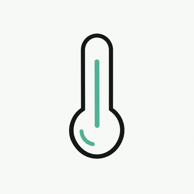
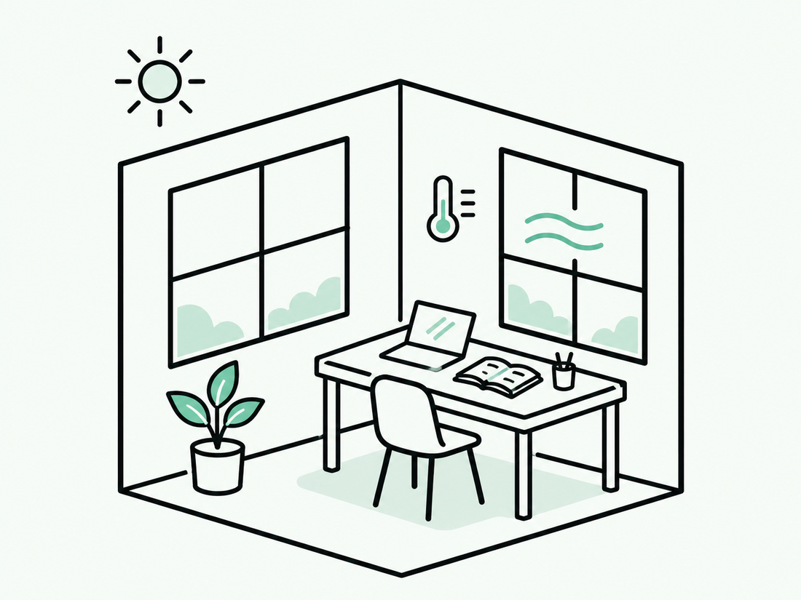
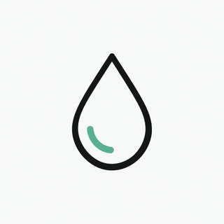
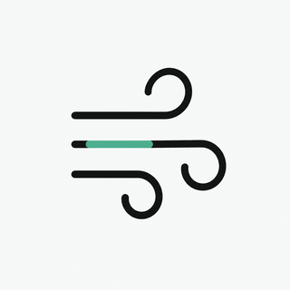

Температура
Характеризует степень нагретости воздуха. При чрезмерно высокой или низкой температуре человек может испытывать дискомфорт, быстрее утомляться.
Почему в жаркой и душной комнате бывает трудно сосредоточиться? От чего зависит комфорт во время учёбы и отдыха? Разберёмся, как условия помещения воздействуют на организм.
Начать изучение →
Микроклимат жилого помещения — это совокупность физических условий воздушной среды внутри помещения. К его основным показателям относят температуру воздуха, относительную влажность и скорость движения воздуха.
Эти показатели влияют на теплообмен между телом человека и окружающей средой. Например, в перегретой комнате организм хуже отдаёт избыточное тепло, а сильный поток холодного воздуха может усиливать охлаждение тела.

Характеризует степень нагретости воздуха. При чрезмерно высокой или низкой температуре человек может испытывать дискомфорт, быстрее утомляться.

Относительная влажность показывает, насколько воздух насыщен водяным паром. Слишком сухой воздух может вызывать ощущение сухости слизистых оболочек, а избыток влаги способствует сырости.

Воздушные потоки влияют на отдачу тепла телом. Слабое движение воздуха может быть комфортным, а сильный холодный поток — неприятным.
Человек постоянно обменивается теплом с окружающей средой. Если в помещении слишком жарко, холодно или влажно, организм затрачивает усилия на поддержание постоянной температуры тела. Это может влиять на самочувствие и способность сосредоточиться.
Качество воздуха зависит, в частности, от поступления свежего воздуха и наличия загрязняющих веществ. В плохо проветриваемом помещении могут накапливаться углекислый газ и другие вещества. Освещённость влияет на удобство чтения и работы: недостаток света и блики мешают различать детали.
Много людей, окна давно закрыты, вентиляция работает недостаточно эффективно.
Возможное последствие: воздух становится менее комфортным, некоторым людям труднее сохранять внимание.
На стекле регулярно образуется конденсат, а рядом остаётся влажный участок стены.
Возможное последствие: при длительной сырости могут появиться условия для развития плесени.
Оценить качество воздуха или причину плохого самочувствия только по ощущениям невозможно: для точных измерений применяют специальные приборы.
Комфортные условия в помещении складываются из нескольких факторов. Для их поддержания важно сочетать простые и безопасные действия.
Не следует самостоятельно разбирать отопительные и вентиляционные приборы. При дыме или загрязнении наружного воздуха проветривание нужно организовывать с учётом безопасности.
Ученик занимается за столом. В комнате жарко, на оконном стекле появляется конденсат, а настольная лампа создаёт блик на экране. Что можно улучшить?
Верный ответ — второй. Он учитывает сразу несколько условий внутренней среды: температуру, влажность, поступление воздуха и освещённость. Появление конденсата — повод выяснить причину повышенной влажности или охлаждения стекла.
Авторские иллюстрации подготовлены специально для лекции. Материал составлен в дополнение к теме урока 66 по биологии, 9 класс.